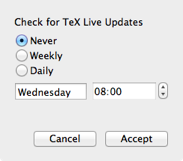
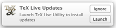

Scheduled Update Checking
TeX Live Utility can check for updated TeX Live packages automatically, using a launchd agent that runs at scheduled intervals. To configure this check, use the Configure menu, which has an item to display this sheet:

The scheduling options should be self-explanatory. For daily checks, you can only adjust the time of day. For weekly checks, you can adjust the day of the week and the time of day.
10.8 and later 
To get the “Ignore” and “Launch” buttons to show, you have to wait until you get at least one notification, then change the style to “Alerts” in the Notifications pane of System Preferences.
The notification will only be shown if updates are available. This will make sense if you think about it long enough.
The update check does not actually update anything or modify your system. The update checker and launchd property list are installed as ~/Library/Application Support/TeX Live Utility/update_check.py and ~/Library/LaunchAgents/com.googlecode.mactlmgr.update_check.plist, respectively.
It is best to schedule update checks for a time when you are likely to be idle, as the alert can steal focus while you are typing. At worst, though, all it does is launch TeX Live Utility; nothing is updated automatically! This is not a problem with the Notification Center alert on 10.8 and later.
This is distinct from TeX Live Utility's automatic check for application updates (which can also run manually from the TeX Live Utility menu).